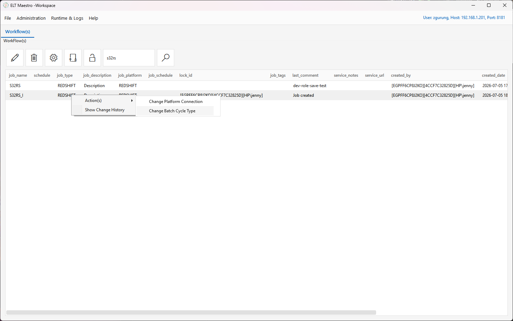
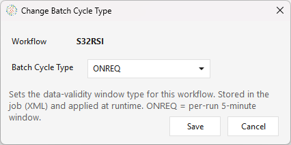
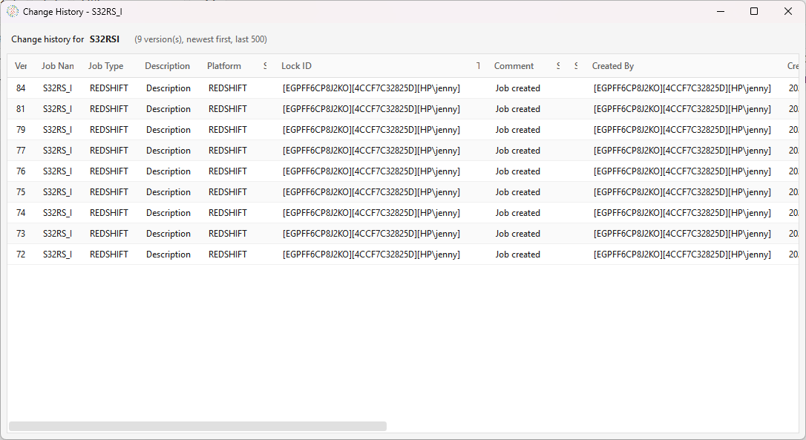
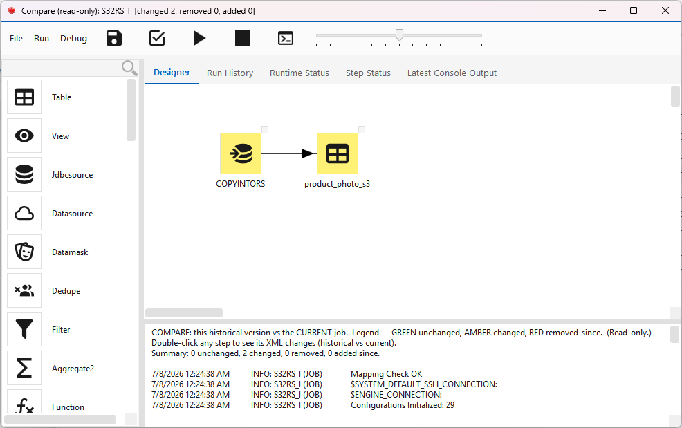
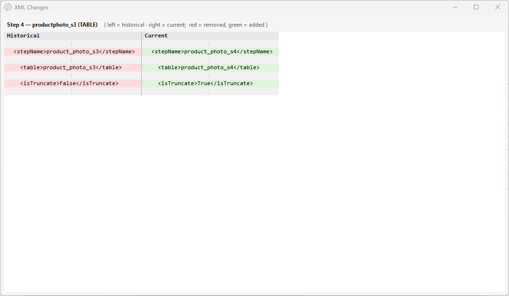
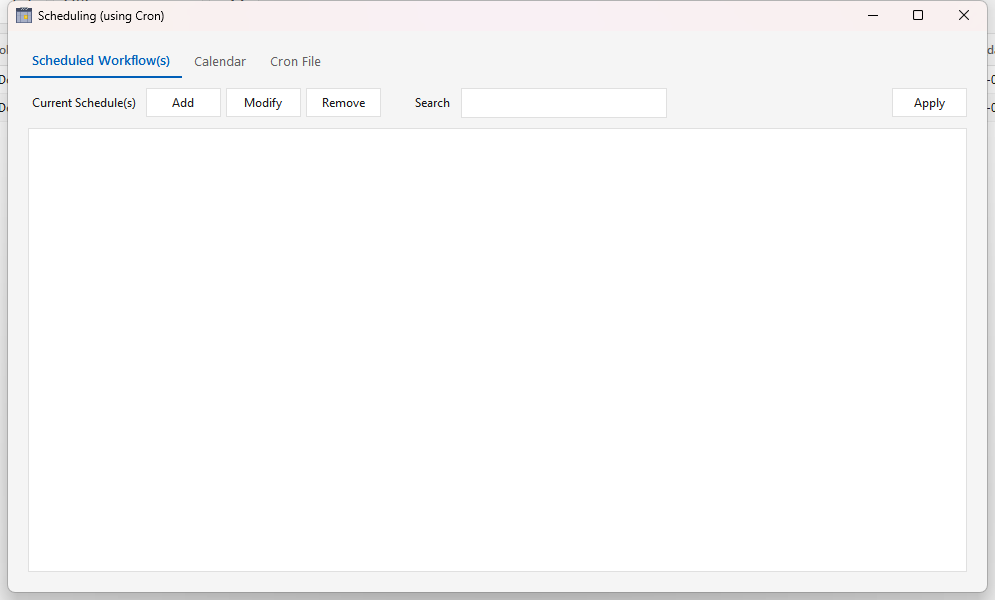
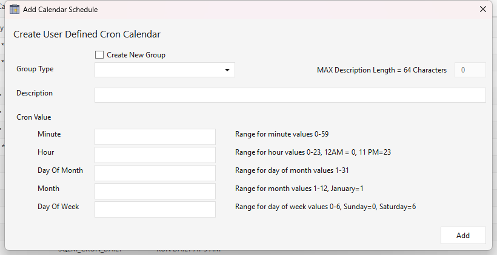
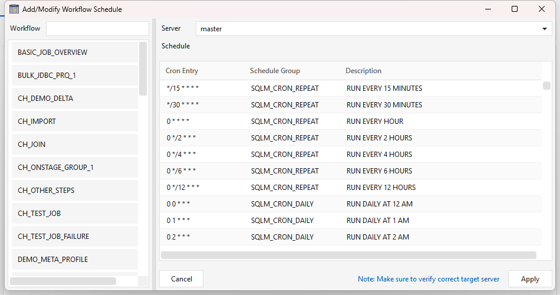

Workflows¶
Part 4 of the ELTMaestro User Guide. Building, running, and monitoring jobs (workflows). This is where the connections from Administration & Setup get used.
Creating a workflow (job)¶
The Workflow(s) tab is the home for all your jobs. Its action toolbar — New, Delete, Config (job metadata), Edit Workflow, and Unlock — sits above a searchable list whose columns (job_name, job_type, job_description, job_platform, job_schedule, tags, comments, service notes/URL, audit columns) summarize every workflow on the server:

From this tab click New (or File ▸ Create Work Flow) to open the Create Job dialog:
| Field | Notes |
|---|---|
| Job Name | Name for the workflow (normalized to a proper name). |
| Job Type | The target platform / integrator: SNOWFLAKE, REDSHIFT, NETEZZA, GREENPLUM, SPARKSQL, DATABRICKS, YELLOWBRICK, CLICKHOUSE, FIREBOLT, EXASOL, SYNAPSE. |
| Platform Connection | The connection the job runs against — populated from the JDBC connections you created in Administration for that platform. Only valid MPP connections appear here — if yours is missing, it was created without the required MPP_Driver_* jar. (For SPARKSQL the list is HDFS connections instead.) |
| Job variables | Starter variables — $STRLEN (128), $CHARLEN (16), $PRECISION (16), $SCALE (4) — plus empty $VAR_n slots you can rename and fill. Referenced in step expressions as $NAME. |

Click OK to create the workflow and open it in the Job editor.
This is the moment the connection binds to the job: the selected platform connection's name is written into the job's XML, and the job's type is fixed by it — the editor title bar shows it in brackets, e.g.
MyJob [SPARKSQL]. Renaming or deleting that connection later breaks the job — see the connection note.
Configuring job metadata¶
Select a workflow on the Workflow(s) tab and click the Config button — the gear icon (tooltip Set job metadata) — to open the Job Metadata editor. This is descriptive metadata for documentation, discoverability, grouping, and support; it does not change how the job runs. Fill in what's useful and click Apply:
| Field | Use |
|---|---|
| Description | What the workflow does. |
| Tag(s) | Labels for categorizing/grouping workflows and finding related ones. |
| Comment(s) | Free-form notes. |
| Service Note(s) | Support / operational notes — ownership, runbook steps, caveats. |
| Service URL(s) | Links to related resources — runbooks, tickets, dashboards, docs. |

Once you Apply, the metadata travels with the workflow and is shown alongside it in the Workflow(s) list on the main window — in the job_description, job_tags, last_comment, service_notes, and service_url columns:

Managing a workflow — right-click actions¶
Right-click a workflow in the Workflow(s) list for actions beyond the toolbar:
- Action(s) ▸ Change Platform Connection — repoint the workflow (and its dependents) to a different platform connection without editing the DAG. Use this after renaming/replacing a connection or moving a job between environments.
- Action(s) ▸ Change Batch Cycle Type — set the workflow's batch cycle type.
- Show Change History — browse and compare the workflow's saved versions.

Change Batch Cycle Type¶
Every workflow has a batch cycle type — the cadence it's meant to run at (ONREQ "on request" by default, or a scheduled grain like HOUR, DAILY, WEEKM, …). The type drives the data-validity window the engine exposes to incremental steps at runtime ($BATCH_START_DATA_VALIDITY_TIMESTAMP / $BATCH_END_DATA_VALIDITY_TIMESTAMP / $BATCH_DATA_VALIDITY_PERIOD).
Pick the type from the dropdown (populated from the server's batch_cycle_type catalog) and click Save. The choice is written into the job XML (<batchType>) and synced to the metadata database, so it travels with the workflow. At launch the engine resolves the effective type by precedence — CLI --type > job XML > stored DB type > ONREQ.

Full list of types and how they compute the validity window: Runtime variables ▸ Batch cycle type.
Show Change History¶
Every time a workflow is saved, the server snapshots it. Show Change History opens a read-only grid of those versions for the selected job — newest first, up to the last 500 — with the description, platform, tags, comment, and who changed it and when.

Compare a version against the current job: right-click a version row ▸ Show Changes. This opens that historical version in a read-only Job editor whose canvas is color-coded against the current deployed job:
- Unchanged steps/arrows render normally.
- Changed steps are highlighted (amber).
- Removed-since steps (in the old version, gone now) are marked (red); steps added since are listed in the status box.
- Double-click any step in this compare view to see a side-by-side XML diff of that step — the exact fields that changed, with unchanged runs collapsed.

Because it's opened read-only, comparing takes no lock on the workflow and can't save, deploy, or run it.

Caveat: a few rows have no stored snapshot — a job's very first save, deletions, and any run where the backup didn't complete. Those rows show a "no snapshot for this version" message instead of a comparison.
The Job editor — designing the DAG¶
Edit Workflow (or double-clicking a workflow) opens the editor. Layout:
- Menu bar — File (Save · Save As · Save Locally… = export the canvas to a job-XML file on your machine, no server write · Exit), Run (Run · Stop), Debug (Check Mapping · View Runtime Log).
- Toolbar — icon buttons for Save, Check Workflow, Run, Stop, and Runtime CLI Configuration, plus a zoom slider. A red lock indicator shows the workflow's lock state.
- Step palette (left) — a scrollable, searchable list of every step type available for this job's platform: sources & loaders (
Dataframe,Local_file,Onstagegroup,Jdbcsource,Datasource,Jdbctargethdfs, …), transforms (Aggregate,Aggregate2,Dedupe,Filter,Function2,Join,Datamask, …), caches, and control steps. The exact list depends on the job type. - Designer canvas (centre, the Designer tab) — where you place and wire steps.
- Message tabs (bottom) — Messages, Runtime Information, and Latest Console Output. On open, the editor logs its initialization here (configurations/aggregates loaded, default SSH/engine connections, mapping check).

A finished workflow wires source steps through transforms into output tables. For example, two source tables joined and the result passed through a function step, plus a separate dedupe → filter branch:

Adding steps¶
Add a step either by picking it from the left step palette (type in the Search box to filter) or by right-clicking the canvas and choosing Insert Step ▸ type — it drops at the click point (the same menu also offers Paste). Step types are grouped by purpose (sources/loaders, transforms, SQL, control, platform-specific, …). Double-click a step to open its configuration dialog, where you set its inputs, outputs, and column expressions.
For what each step type does, its dialog, and its options, see the Step reference.
Bulk-generate a pipeline (Redshift). On a REDSHIFT job, the canvas right-click menu also has a Generate Pipeline submenu that builds whole multi-step pipelines for a list of tables at once — Export Jdbc To S3 Parquet and Import S3 Parquet To Redshift — instead of wiring each step by hand. See Parquet ⇄ Redshift pipelines.
Connecting steps¶
Drag from one step to the next to draw an arrow. Arrows define the execution order and the success/failure branches of the DAG. Steps that hit the database use the platform connection bound at job creation; file steps use your SSH / cloud connections.
Configuring a step — the expression builder¶
Double-click any step to open its configuration. Transform steps (Function/Function2, Aggregate/Aggregate2, Filter, Join, Dedupe, …) open an expression editor where you shape the step's output columns from its inputs:

- Source Columns (left) — the columns flowing in from upstream steps, with their data types. Searchable; Add F(x) promotes a source column to an output.
- Output Column(s) (right) — each column the step emits, defined by:
- Alias — the output column name (e.g.
Gender,row_count). - Type — the output data type (e.g.
Nullable(String),Int64). - Mode — F(x) for a per-row scalar expression, or Σ(x) for an aggregate.
- Expression — the formula: a passthrough like
`Gender`or an aggregate likeCOUNT(*). The pencil opens a larger expression editor. - Add F(x) / Add Σ(x) / Add F(F(x)) add a scalar, aggregate, or nested-function output; Clear / Delete manage them. Functions, aggregates, constants, and operators come from the function catalog.
- The Filters tab adds row-level filter conditions (WHERE / HAVING) for the step.
Click OK to save the mapping back into the job; Check Mapping then validates every step's columns across the DAG.
Validate & save¶
- Check Mapping validates each step's input/output column mappings and reports issues in the Messages pane.
- Save writes the design to the server; Save As saves it under a new name; Save Locally… exports the job XML to disk.
Executing a workflow¶
- Run first saves the current design, then submits the job; the editor shows RUNNING, the window title reflects the run state, and a run number is assigned.
- Stop requests a halt of the running workflow.
- You can also launch a run from the main Workflow(s) list.
Monitoring¶
Within the Job editor (bottom tabs):
- Messages — the editor's initialization and action log.
- Runtime Information — the runtime URL and details for the open job (Refresh).
- Latest Console Output — tail of the latest step's console log (set the line count, then Refresh).
- View Runtime Log (Debug menu) — the run's engine log.
The editor's top tabs give per-run status for the open job (each has its own Refresh):
- Run History — past runs of this job: batch run number, overall/job status, start time, and duration.
- Runtime Status — a live diagram of the step flow, each step coloured by its status from the latest run; click a node to open that step or jump to its log.
- Step Status — a grid of per-step status for the latest run (step, type, status, start/update time). Step names shown are the current design names, so a renamed step reads the same here as in the Runtime Status diagram. Below the steps, a Control Tests grid lists the run's data-quality control-test results — name, description, expected vs. actual value, and pass/fail — so control tests are visible here even though they are recorded separately from the steps.
Across all workflows, use the main window's Runtime & Logs ▸ Logging ▸ Workflow Logs for run history and detailed logs. The log and report viewers are covered in Menus in depth.
Scheduling a workflow (Cron Scheduler)¶
Running a workflow on a schedule is separate from designing and running it by hand. Administration ▸ Scheduler opens the Scheduling (using Cron) window, which manages recurring runs by writing entries into the Maestro server's crontab — the OS cron daemon on the server is what actually fires each run, not the client. The client only has to be open while you edit and deploy the schedule.
There are two things to understand:
- A cron calendar is a named, reusable cron expression (e.g. "every day at 03:00"), stored on the server and shared across workflows.
- A workflow schedule binds one deployed workflow to one calendar on a chosen server, producing the actual crontab line.
So you typically create the calendar once, then attach as many workflows to it as you like. The window has three tabs — Scheduled Workflow(s) (the workflow↔calendar bindings), Calendar (the reusable cron expressions), and Cron File (a read-only view of the server's live crontab -l).

1. Create a cron calendar¶
On the Calendar tab, the grid lists the calendars already defined (their cron entry, schedule group, and description). Click Add to open Add Calendar Schedule and define a new one:
| Field | Notes |
|---|---|
| Group Type | The group the calendar belongs to (e.g. a team or cadence family). Pick an existing group, or tick Create New Group and type a new name (it's upper-cased and spaces become _). |
| Description | A human label for the schedule (max 64 characters; upper-cased on save). |
| Cron Value | The schedule itself, entered as five separate fields — Minute (0–59), Hour (0–23, 12 AM = 0), Day Of Month (1–31), Month (1–12, January = 1), and Day Of Week (0–6, Sunday = 0). Each accepts standard cron syntax (*, 5, */15, 1-5, 0,30). |
Click Add to save. The calendar is written to the server's cron_schedule_meta table and immediately becomes selectable when you schedule a workflow. Calendars are de-duplicated — adding one whose cron value already exists tells you which group already has it.

Example. For "every day at 03:00" set Minute
0, Hour3, and leave Day Of Month, Month, and Day Of Week as*→ cron0 3 * * *. For "every 15 minutes" set Minute*/15and the rest*.
2. Schedule a workflow¶
On the Scheduled Workflow(s) tab, click Add to open Add/Modify Workflow Schedule:
- Server — the target Maestro server the job runs on (defaults to master). In a multi-node install, verify this is the node you intend — the dialog flags it because a wrong server is easy to miss.
- Workflow — the searchable list shows deployed workflows only (a job must be saved to the server before it can be scheduled; local-only drafts don't appear). Workflows that already have a schedule are marked as such.
- Schedule — pick one of the calendars from step 1.

Click Apply to stage the binding. Back on the Scheduled Workflow(s) tab, the new entry shows its workflow and human-readable schedule. Use Modify to repoint an existing entry to a different workflow/calendar/server, Remove to drop one, and the Search box to filter a long list. These edits are staged locally — nothing reaches the server until you Apply the whole tab (next step).
3. Deploy the schedule to the server¶
Click Apply (top-right of the Scheduled Workflow(s) tab) to write all staged changes to the server crontab. On Apply, Maestro:
- backs up the current crontab to
~/ELTM_WORKFLOW_HISTORY/cron/cron_<timestamp>.txt; - rewrites the crontab, preserving any lines you manage by hand and wrapping the Maestro entries between
#BEGIN_MAESTRO_MANAGED_SCHEDULEand#END_MAESTRO_MANAGED_SCHEDULEmarkers — don't hand-edit inside that block, the next Apply regenerates it; - updates each workflow's
job_scheduleso the cadence is visible in the Workflow(s) listjob_schedulecolumn.
You'll get a confirmation to verify with crontab -l on the server. Closing the window with un-applied changes prompts a warning.
Each managed crontab line runs the deployed job through the engine driver — roughly:
<cron-expr> . ~/.env_integrator; java $MAESTRO_ENGINE_OPTS -jar $MAESTRO_JAR_FILE \
--server <server> --batch $MAESTRO_DEPLOYED_FILES_DIR/<workflow> \
1> $MAESTRO_CONSOLE_LOG_DIR/<workflow>.log 2>&1
Cadence vs. the data-validity window¶
The cron expression controls when the job launches. It does not set the batch/data-validity window — note there is deliberately no --type on the crontab line. The incremental window each run sees comes from the workflow's batch cycle type (<batchType> in the job XML), which the engine reads at runtime. So the two are set independently and must agree:
- Cron = the trigger cadence (e.g. fire hourly).
- Batch cycle type = the
$BATCH_START/END_DATA_VALIDITY_TIMESTAMPwindow that incremental steps filter on (see Runtime variables ▸ Batch cycle type).
A daily-incremental job, for example, is a workflow whose batch cycle type is DAILY attached to a calendar that fires once a day. For change-detection that keys off the target instead of the calendar window, use a Delta Watermark on the extract/load step (Administration ▸ Workflow Configuration ▸ Job Watermarks) — that tracks MAX(column) regardless of cadence.
Prerequisites & gotchas¶
- The job must be deployed (saved to the server) — the scheduler lists deployed workflows only.
- A cron daemon must be running on the server for entries to fire. The Docker install supervises cron; on a bare host, confirm
cron/crondis active. $MAESTRO_ENGINE_OPTSmust be set in the server's~/.env_integrator. The scheduler emits it so scheduled runs get the same JVM flags as interactive runs — an older crontab hand-edited to a barejava -jar …(no opts) will silently fail scheduled Snowflake jobs (the Arrow--add-opensflag is missing). See SNOWFLAKE-SETUP.md.- Don't edit inside the managed block — keep your own cron lines outside the
#BEGIN/#END_MAESTRO_MANAGED_SCHEDULEmarkers.
Tying it together¶
A workflow connects to the rest of ELTMaestro:
| Want to… | Where |
|---|---|
| Get emailed on success/failure | Administration ▸ Workflow Configuration ▸ Email Alerts → UG-MENUS.md |
| Run a workflow on a schedule | Scheduling a workflow (Cron Scheduler) — Administration ▸ Scheduler |
| Manage incremental-load watermarks | Administration ▸ Workflow Configuration ▸ Job Watermarks |
| Move a workflow between servers | Administration ▸ Migration ▸ Export / Import Workflow(s) |
| Document / tag a workflow | the Job Metadata gear icon |
| Validate the data | Data-quality control tests — Administration ▸ Metrics Configuration ▸ Control Test |
| Organize jobs into Bronze / Silver / Gold layers | Medallion architecture — layer tags + JobStep chaining |
That's the full loop: sign in → set up connections → design & run workflows → monitor → schedule & alert.
For designing multi-layer pipelines (raw → cleaned → marts), see Medallion architecture with ELTMaestro.